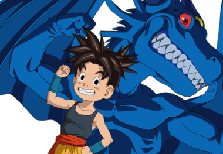
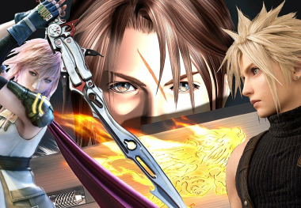

Trabajos Realizados

Blue Dragon
Es un juego de rol para la consola de videojuegos Xbox 360. Fue desarrollado por Mistwalker y Artoon y publicado por Microsoft Game Studios.

Final Fantasy
Compuso la música de los Final Fantasy I (1987) hasta el XIV (2010). En 2020 participó en la creación de la música para el remake de Final Fantasy VII.

Otros videojuegos
Entre sus otros trabajos se encuentran Super Mario RPG: Legend of the Seven Stars (1996), Ah! My Goddess: The Movie (2000), GUI SAGA (2009).